Legend: GT boundary green, prediction boundary magenta, TP blue tint, FP red, FN yellow. Accepted cuts are orange.
large component-count improvement with gap and boundary improvement
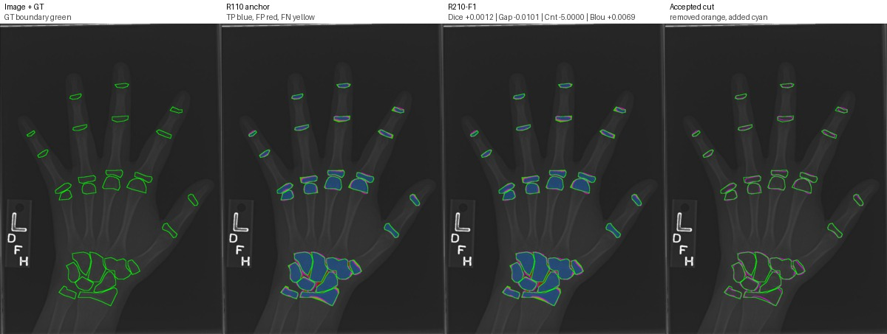
{
"accepted": "1.0",
"accepted_cut_pixels": "326.0",
"anchor_assd_px": "2.896929144588408",
"anchor_boundary_f1": "0.36129258560968125",
"anchor_boundary_iou": "0.2204741263980307",
"anchor_component_count_mae": "6.0",
"anchor_component_delta_mean": "-6.0",
"anchor_component_merge_rate": "1.0",
"anchor_dice": "0.9099072081289913",
"anchor_gap_region_fp_rate": "0.21582488714760242",
"anchor_gap_region_precision": "0.7841751128523976",
"anchor_hd95_px": "8.54400374531753",
"anchor_instance_merge_count": "2.0",
"anchor_iou": "0.8347061964947486",
"anchor_precision": "0.9087689624187325",
"anchor_recall": "0.9110483087520975",
"anchor_specificity": "0.995086102343449",
"anchor_surface_dice_2px": "0.6457981325033348",
"anchor_surface_dice_5px": "0.8954201867496665",
"delta_assd_px": "-0.048228226369541716",
"delta_boundary_f1": "0.009272001001051133",
"delta_boundary_iou": "0.00694488239836491",
"delta_component_count_mae": "-5.0",
"delta_component_delta_mean": "5.0",
"delta_component_merge_rate": "0.0",
"delta_dice": "0.001190928912567002",
"delta_gap_region_fp_rate": "-0.010135422877097344",
"delta_gap_region_precision": "0.010135422877097344",
"delta_hd95_px": "-0.2977924940822092",
"delta_instance_merge_count": "0.0",
"delta_iou": "0.0020066130197765597",
"delta_precision": "0.003814546645434347",
"delta_recall": "-0.0014307162412788843",
"delta_specificity": "0.00023250384817596892",
"delta_surface_dice_2px": "0.01122299300705043",
"delta_surface_dice_5px": "0.0025915299199589237",
"image": "3840.png",
"num_candidates": "16.0",
"num_candidates_tried": "5.0",
"r210_f1_assd_px": "2.8487009182188663",
"r210_f1_boundary_f1": "0.3705645866107324",
"r210_f1_boundary_iou": "0.22741900879639562",
"r210_f1_component_count_mae": "1.0",
"r210_f1_component_delta_mean": "-1.0",
"r210_f1_component_merge_rate": "1.0",
"r210_f1_dice": "0.9110981370415583",
"r210_f1_gap_region_fp_rate": "0.20568946427050508",
"r210_f1_gap_region_precision": "0.794310535729495",
"r210_f1_hd95_px": "8.246211251235321",
"r210_f1_instance_merge_count": "2.0",
"r210_f1_iou": "0.8367128095145252",
"r210_f1_precision": "0.9125835090641669",
"r210_f1_recall": "0.9096175925108186",
"r210_f1_specificity": "0.9953186061916249",
"r210_f1_surface_dice_2px": "0.6570211255103853",
"r210_f1_surface_dice_5px": "0.8980117166696254",
"reject_reason": "accepted"
}
component-count improvement with gap reduction and Dice preserved
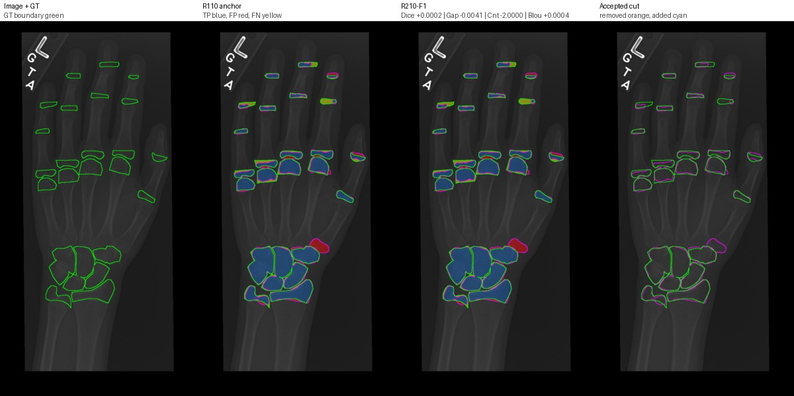
{
"accepted": "1.0",
"accepted_cut_pixels": "229.0",
"anchor_assd_px": "3.777674617795932",
"anchor_boundary_f1": "0.2819647544056993",
"anchor_boundary_iou": "0.1641204714098647",
"anchor_component_count_mae": "5.0",
"anchor_component_delta_mean": "-5.0",
"anchor_component_merge_rate": "1.0",
"anchor_dice": "0.8788764999599805",
"anchor_gap_region_fp_rate": "0.22868590932700156",
"anchor_gap_region_precision": "0.7713140906729985",
"anchor_hd95_px": "11.40175425099138",
"anchor_instance_merge_count": "4.0",
"anchor_iou": "0.7839247860994871",
"anchor_precision": "0.8815631831824413",
"anchor_recall": "0.8762061430430406",
"anchor_specificity": "0.9914941517303534",
"anchor_surface_dice_2px": "0.5306029579067122",
"anchor_surface_dice_5px": "0.8253318164580963",
"delta_assd_px": "-0.007139533520853281",
"delta_boundary_f1": "0.0005845513837546834",
"delta_boundary_iou": "0.00039621995246424957",
"delta_component_count_mae": "-2.0",
"delta_component_delta_mean": "2.0",
"delta_component_merge_rate": "0.0",
"delta_dice": "0.00024207555545796566",
"delta_gap_region_fp_rate": "-0.004118127179639386",
"delta_gap_region_precision": "0.00411812717963933",
"delta_hd95_px": "0.0",
"delta_instance_merge_count": "0.0",
"delta_iou": "0.0003852723169971428",
"delta_precision": "0.0014972374581809778",
"delta_recall": "-0.0009943774705982733",
"delta_specificity": "0.00013128225507430535",
"delta_surface_dice_2px": "0.003593815553864954",
"delta_surface_dice_5px": "0.0006168315764413235",
"image": "3700.png",
"num_candidates": "16.0",
"num_candidates_tried": "5.0",
"r210_f1_assd_px": "3.7705350842750787",
"r210_f1_boundary_f1": "0.282549305789454",
"r210_f1_boundary_iou": "0.16451669136232894",
"r210_f1_component_count_mae": "3.0",
"r210_f1_component_delta_mean": "-3.0",
"r210_f1_component_merge_rate": "1.0",
"r210_f1_dice": "0.8791185755154385",
"r210_f1_gap_region_fp_rate": "0.22456778214736217",
"r210_f1_gap_region_precision": "0.7754322178526378",
"r210_f1_hd95_px": "11.40175425099138",
"r210_f1_instance_merge_count": "4.0",
"r210_f1_iou": "0.7843100584164843",
"r210_f1_precision": "0.8830604206406223",
"r210_f1_recall": "0.8752117655724423",
"r210_f1_specificity": "0.9916254339854277",
"r210_f1_surface_dice_2px": "0.5341967734605771",
"r210_f1_surface_dice_5px": "0.8259486480345376",
"reject_reason": "accepted"
}
component-count and merge improvement with small Dice cost
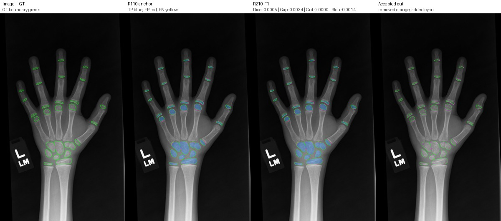
{
"accepted": "1.0",
"accepted_cut_pixels": "243.0",
"anchor_assd_px": "1.521643352886416",
"anchor_boundary_f1": "0.4406073474620408",
"anchor_boundary_iou": "0.28255061144794985",
"anchor_component_count_mae": "2.0",
"anchor_component_delta_mean": "-2.0",
"anchor_component_merge_rate": "1.0",
"anchor_dice": "0.9396147686702027",
"anchor_gap_region_fp_rate": "0.19084602624038607",
"anchor_gap_region_precision": "0.809153973759614",
"anchor_hd95_px": "4.0",
"anchor_instance_merge_count": "2.0",
"anchor_iou": "0.88610699291979",
"anchor_precision": "0.9265328001854427",
"anchor_recall": "0.953071443474114",
"anchor_specificity": "0.9980146192305133",
"anchor_surface_dice_2px": "0.7576572173346366",
"anchor_surface_dice_5px": "0.9853372434017595",
"delta_assd_px": "0.0028159006176200485",
"delta_boundary_f1": "-0.0017541236492890633",
"delta_boundary_iou": "-0.0014410895844435",
"delta_component_count_mae": "-2.0",
"delta_component_delta_mean": "2.0",
"delta_component_merge_rate": "-1.0",
"delta_dice": "-0.0004833099888370551",
"delta_gap_region_fp_rate": "-0.003355451666415321",
"delta_gap_region_precision": "0.0033554516664152656",
"delta_hd95_px": "0.0",
"delta_instance_merge_count": "0.0",
"delta_iou": "-0.0008592717327261523",
"delta_precision": "0.0011361781661369807",
"delta_recall": "-0.0021906947631963325",
"delta_specificity": "3.758559532052175e-05",
"delta_surface_dice_2px": "-0.004612891957140319",
"delta_surface_dice_5px": "0.0011053609171234324",
"image": "15040.png",
"num_candidates": "16.0",
"num_candidates_tried": "5.0",
"r210_f1_assd_px": "1.524459253504036",
"r210_f1_boundary_f1": "0.4388532238127517",
"r210_f1_boundary_iou": "0.28110952186350635",
"r210_f1_component_count_mae": "0.0",
"r210_f1_component_delta_mean": "0.0",
"r210_f1_component_merge_rate": "0.0",
"r210_f1_dice": "0.9391314586813656",
"r210_f1_gap_region_fp_rate": "0.18749057457397075",
"r210_f1_gap_region_precision": "0.8125094254260292",
"r210_f1_hd95_px": "4.0",
"r210_f1_instance_merge_count": "2.0",
"r210_f1_iou": "0.8852477211870639",
"r210_f1_precision": "0.9276689783515797",
"r210_f1_recall": "0.9508807487109177",
"r210_f1_specificity": "0.9980522048258338",
"r210_f1_surface_dice_2px": "0.7530443253774963",
"r210_f1_surface_dice_5px": "0.986442604318883",
"reject_reason": "accepted"
}
merge improvement with gap and boundary improvement
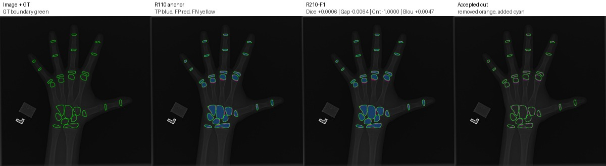
{
"accepted": "1.0",
"accepted_cut_pixels": "200.0",
"anchor_assd_px": "1.3311295562196523",
"anchor_boundary_f1": "0.48741455142811724",
"anchor_boundary_iou": "0.3222393497757848",
"anchor_component_count_mae": "2.0",
"anchor_component_delta_mean": "-2.0",
"anchor_component_merge_rate": "1.0",
"anchor_dice": "0.9282843347910715",
"anchor_gap_region_fp_rate": "0.1255415517920441",
"anchor_gap_region_precision": "0.8744584482079559",
"anchor_hd95_px": "4.0",
"anchor_instance_merge_count": "2.0",
"anchor_iou": "0.8661666194924049",
"anchor_precision": "0.9326459084675166",
"anchor_recall": "0.9239633655394525",
"anchor_specificity": "0.9982569763666501",
"anchor_surface_dice_2px": "0.8197826086956522",
"anchor_surface_dice_5px": "0.981195652173913",
"delta_assd_px": "-0.019397743675729995",
"delta_boundary_f1": "0.005317622576851311",
"delta_boundary_iou": "0.004664844360840248",
"delta_component_count_mae": "-1.0",
"delta_component_delta_mean": "3.0",
"delta_component_merge_rate": "-1.0",
"delta_dice": "0.0005785355300212958",
"delta_gap_region_fp_rate": "-0.006400157542339496",
"delta_gap_region_precision": "0.0064001575423394685",
"delta_hd95_px": "0.0",
"delta_instance_merge_count": "0.0",
"delta_iou": "0.0010079416205464042",
"delta_precision": "0.0029746561927171955",
"delta_recall": "-0.0017612721417068489",
"delta_specificity": "8.544233496821096e-05",
"delta_surface_dice_2px": "0.008125377415458934",
"delta_surface_dice_5px": "0.0003581672705313954",
"image": "3354.png",
"num_candidates": "16.0",
"num_candidates_tried": "5.0",
"r210_f1_assd_px": "1.3117318125439223",
"r210_f1_boundary_f1": "0.49273217400496855",
"r210_f1_boundary_iou": "0.326904194136625",
"r210_f1_component_count_mae": "1.0",
"r210_f1_component_delta_mean": "1.0",
"r210_f1_component_merge_rate": "0.0",
"r210_f1_dice": "0.9288628703210928",
"r210_f1_gap_region_fp_rate": "0.1191413942497046",
"r210_f1_gap_region_precision": "0.8808586057502954",
"r210_f1_hd95_px": "4.0",
"r210_f1_instance_merge_count": "2.0",
"r210_f1_iou": "0.8671745611129513",
"r210_f1_precision": "0.9356205646602338",
"r210_f1_recall": "0.9222020933977456",
"r210_f1_specificity": "0.9983424187016183",
"r210_f1_surface_dice_2px": "0.8279079861111112",
"r210_f1_surface_dice_5px": "0.9815538194444444",
"reject_reason": "accepted"
}
strong gap and boundary improvement with Dice preserved
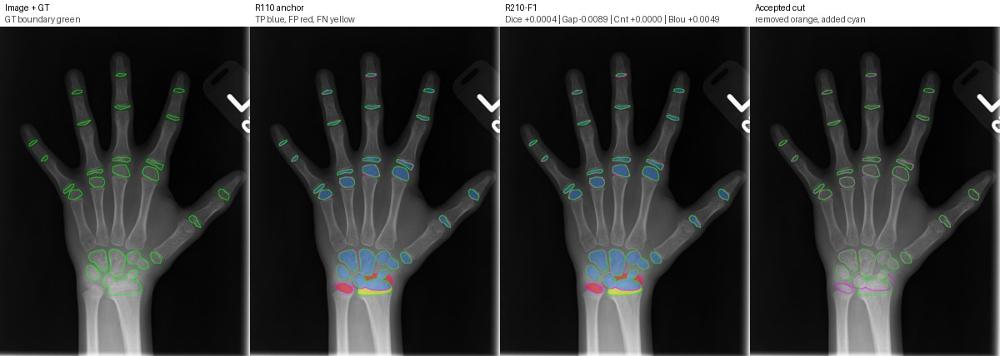
{
"accepted": "1.0",
"accepted_cut_pixels": "322.0",
"anchor_assd_px": "3.281095077234025",
"anchor_boundary_f1": "0.4076344385622736",
"anchor_boundary_iou": "0.25599300087489063",
"anchor_component_count_mae": "0.0",
"anchor_component_delta_mean": "0.0",
"anchor_component_merge_rate": "0.0",
"anchor_dice": "0.8741845467526529",
"anchor_gap_region_fp_rate": "0.1957871878393051",
"anchor_gap_region_precision": "0.8042128121606948",
"anchor_hd95_px": "19.289860759580893",
"anchor_instance_merge_count": "1.0",
"anchor_iou": "0.7764900936748735",
"anchor_precision": "0.8566516068848201",
"anchor_recall": "0.8924501695948779",
"anchor_specificity": "0.9946793740711648",
"anchor_surface_dice_2px": "0.7093012230966151",
"anchor_surface_dice_5px": "0.8957049397933061",
"delta_assd_px": "-0.021847051039446175",
"delta_boundary_f1": "0.006168260755939847",
"delta_boundary_iou": "0.0048841921075655215",
"delta_component_count_mae": "0.0",
"delta_component_delta_mean": "0.0",
"delta_component_merge_rate": "0.0",
"delta_dice": "0.00042580456302576675",
"delta_gap_region_fp_rate": "-0.008859934853420182",
"delta_gap_region_precision": "0.008859934853420182",
"delta_hd95_px": "-0.05058550520177363",
"delta_instance_merge_count": "0.0",
"delta_iou": "0.0006721561629264849",
"delta_precision": "0.002904226709174229",
"delta_recall": "-0.002248561301878893",
"delta_specificity": "0.000138497854980546",
"delta_surface_dice_2px": "0.006513170842778804",
"delta_surface_dice_5px": "0.0004124844491181223",
"image": "11852.png",
"num_candidates": "16.0",
"num_candidates_tried": "5.0",
"r210_f1_assd_px": "3.259248026194579",
"r210_f1_boundary_f1": "0.41380269931821345",
"r210_f1_boundary_iou": "0.26087719298245615",
"r210_f1_component_count_mae": "0.0",
"r210_f1_component_delta_mean": "0.0",
"r210_f1_component_merge_rate": "0.0",
"r210_f1_dice": "0.8746103513156787",
"r210_f1_gap_region_fp_rate": "0.18692725298588492",
"r210_f1_gap_region_precision": "0.813072747014115",
"r210_f1_hd95_px": "19.23927525437912",
"r210_f1_instance_merge_count": "1.0",
"r210_f1_iou": "0.7771622498378",
"r210_f1_precision": "0.8595558335939943",
"r210_f1_recall": "0.890201608292999",
"r210_f1_specificity": "0.9948178719261453",
"r210_f1_surface_dice_2px": "0.715814393939394",
"r210_f1_surface_dice_5px": "0.8961174242424242",
"reject_reason": "accepted"
}
merge and gap improvement with Dice improvement
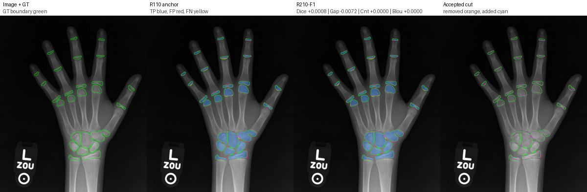
{
"accepted": "1.0",
"accepted_cut_pixels": "334.0",
"anchor_assd_px": "2.264420568944397",
"anchor_boundary_f1": "0.40271462036654265",
"anchor_boundary_iou": "0.25212440150109994",
"anchor_component_count_mae": "1.0",
"anchor_component_delta_mean": "-1.0",
"anchor_component_merge_rate": "1.0",
"anchor_dice": "0.9354451250805298",
"anchor_gap_region_fp_rate": "0.19699111470113084",
"anchor_gap_region_precision": "0.8030088852988692",
"anchor_hd95_px": "6.379553562303936",
"anchor_instance_merge_count": "2.0",
"anchor_iou": "0.8787194978100992",
"anchor_precision": "0.9343126990359029",
"anchor_recall": "0.9365802995517656",
"anchor_specificity": "0.9969603682077628",
"anchor_surface_dice_2px": "0.6732742374537586",
"anchor_surface_dice_5px": "0.9201507642911985",
"delta_assd_px": "-0.030351829943505493",
"delta_boundary_f1": "1.8802249438953922e-05",
"delta_boundary_iou": "1.4739402713959127e-05",
"delta_component_count_mae": "0.0",
"delta_component_delta_mean": "2.0",
"delta_component_merge_rate": "-1.0",
"delta_dice": "0.0008228426268235278",
"delta_gap_region_fp_rate": "-0.00716882067851371",
"delta_gap_region_precision": "0.007168820678513765",
"delta_hd95_px": "-0.054998241967177286",
"delta_instance_merge_count": "0.0",
"delta_iou": "0.0014532705979634075",
"delta_precision": "0.0025291757862254682",
"delta_recall": "-0.0008855362413906498",
"delta_specificity": "0.00012768169407872954",
"delta_surface_dice_2px": "0.00583699748390254",
"delta_surface_dice_5px": "0.004624606608014448",
"image": "6606.png",
"num_candidates": "16.0",
"num_candidates_tried": "5.0",
"r210_f1_assd_px": "2.2340687390008913",
"r210_f1_boundary_f1": "0.4027334226159816",
"r210_f1_boundary_iou": "0.2521391409038139",
"r210_f1_component_count_mae": "1.0",
"r210_f1_component_delta_mean": "1.0",
"r210_f1_component_merge_rate": "0.0",
"r210_f1_dice": "0.9362679677073533",
"r210_f1_gap_region_fp_rate": "0.18982229402261713",
"r210_f1_gap_region_precision": "0.8101777059773829",
"r210_f1_hd95_px": "6.324555320336759",
"r210_f1_instance_merge_count": "2.0",
"r210_f1_iou": "0.8801727684080626",
"r210_f1_precision": "0.9368418748221283",
"r210_f1_recall": "0.9356947633103749",
"r210_f1_specificity": "0.9970880499018415",
"r210_f1_surface_dice_2px": "0.6791112349376611",
"r210_f1_surface_dice_5px": "0.9247753708992129",
"reject_reason": "accepted"
}
largest Dice/Recall drop among accepted edits despite component improvement
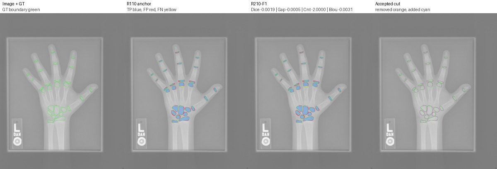
{
"accepted": "1.0",
"accepted_cut_pixels": "304.0",
"anchor_assd_px": "3.270257284890374",
"anchor_boundary_f1": "0.25058339052848316",
"anchor_boundary_iou": "0.14323825964141396",
"anchor_component_count_mae": "4.0",
"anchor_component_delta_mean": "-4.0",
"anchor_component_merge_rate": "1.0",
"anchor_dice": "0.8760854599693233",
"anchor_gap_region_fp_rate": "0.3824586865455025",
"anchor_gap_region_precision": "0.6175413134544975",
"anchor_hd95_px": "8.54400374531753",
"anchor_instance_merge_count": "1.0",
"anchor_iou": "0.779494729150324",
"anchor_precision": "0.8304312486405422",
"anchor_recall": "0.9270515163520646",
"anchor_specificity": "0.9971319879958633",
"anchor_surface_dice_2px": "0.4574238091917149",
"anchor_surface_dice_5px": "0.776344235999721",
"delta_assd_px": "0.032618715169769885",
"delta_boundary_f1": "-0.004829965870948916",
"delta_boundary_iou": "-0.0031476771019793293",
"delta_component_count_mae": "-2.0",
"delta_component_delta_mean": "6.0",
"delta_component_merge_rate": "-1.0",
"delta_dice": "-0.0018976491594935307",
"delta_gap_region_fp_rate": "-0.0004617871161394782",
"delta_gap_region_precision": "0.0004617871161395337",
"delta_hd95_px": "0.40026816468162885",
"delta_instance_merge_count": "0.0",
"delta_iou": "-0.0029994849136643076",
"delta_precision": "-0.00043136352100903164",
"delta_recall": "-0.0037062123787493517",
"delta_specificity": "2.7107863933562015e-06",
"delta_surface_dice_2px": "-0.003024032141620836",
"delta_surface_dice_5px": "-0.0031260934511249117",
"image": "1560.png",
"num_candidates": "16.0",
"num_candidates_tried": "5.0",
"r210_f1_assd_px": "3.302876000060144",
"r210_f1_boundary_f1": "0.24575342465753425",
"r210_f1_boundary_iou": "0.14009058253943463",
"r210_f1_component_count_mae": "2.0",
"r210_f1_component_delta_mean": "2.0",
"r210_f1_component_merge_rate": "0.0",
"r210_f1_dice": "0.8741878108098298",
"r210_f1_gap_region_fp_rate": "0.38199689942936305",
"r210_f1_gap_region_precision": "0.618003100570637",
"r210_f1_hd95_px": "8.94427190999916",
"r210_f1_instance_merge_count": "1.0",
"r210_f1_iou": "0.7764952442366597",
"r210_f1_precision": "0.8299998851195332",
"r210_f1_recall": "0.9233453039733153",
"r210_f1_specificity": "0.9971346987822567",
"r210_f1_surface_dice_2px": "0.45439977705009404",
"r210_f1_surface_dice_5px": "0.7732181425485961",
"reject_reason": "accepted"
}
Recall drop risk with small gap gain
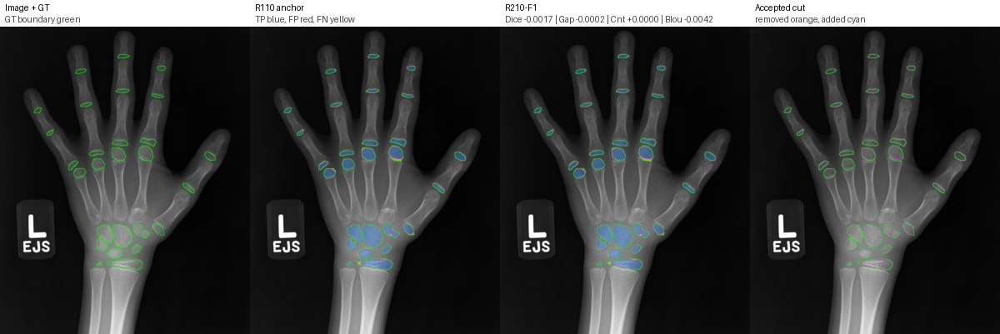
{
"accepted": "1.0",
"accepted_cut_pixels": "162.0",
"anchor_assd_px": "1.7075469496584803",
"anchor_boundary_f1": "0.456278079924332",
"anchor_boundary_iou": "0.2955701243796336",
"anchor_component_count_mae": "0.0",
"anchor_component_delta_mean": "0.0",
"anchor_component_merge_rate": "0.0",
"anchor_dice": "0.9247154768425537",
"anchor_gap_region_fp_rate": "0.1056701030927835",
"anchor_gap_region_precision": "0.8943298969072165",
"anchor_hd95_px": "5.0",
"anchor_instance_merge_count": "1.0",
"anchor_iou": "0.8599728322390763",
"anchor_precision": "0.9487355604121136",
"anchor_recall": "0.9018816406481867",
"anchor_specificity": "0.9984316447353758",
"anchor_surface_dice_2px": "0.756746300415901",
"anchor_surface_dice_5px": "0.9528000773769223",
"delta_assd_px": "0.03200992984554718",
"delta_boundary_f1": "-0.005021703578214465",
"delta_boundary_iou": "-0.004200804465025465",
"delta_component_count_mae": "0.0",
"delta_component_delta_mean": "0.0",
"delta_component_merge_rate": "0.0",
"delta_dice": "-0.0016682525883068289",
"delta_gap_region_fp_rate": "-0.00021477663230240474",
"delta_gap_region_precision": "0.00021477663230240474",
"delta_hd95_px": "0.38516480713450374",
"delta_instance_merge_count": "0.0",
"delta_iou": "-0.0028811890005245866",
"delta_precision": "-6.90190508789712e-05",
"delta_recall": "-0.003106388872400667",
"delta_specificity": "3.183831231545753e-06",
"delta_surface_dice_2px": "-0.0057803035070910225",
"delta_surface_dice_5px": "-0.004191112925608587",
"image": "13480.png",
"num_candidates": "16.0",
"num_candidates_tried": "5.0",
"r210_f1_assd_px": "1.7395568795040275",
"r210_f1_boundary_f1": "0.45125637634611754",
"r210_f1_boundary_iou": "0.2913693199146081",
"r210_f1_component_count_mae": "0.0",
"r210_f1_component_delta_mean": "0.0",
"r210_f1_component_merge_rate": "0.0",
"r210_f1_dice": "0.9230472242542469",
"r210_f1_gap_region_fp_rate": "0.1054553264604811",
"r210_f1_gap_region_precision": "0.8945446735395189",
"r210_f1_hd95_px": "5.385164807134504",
"r210_f1_instance_merge_count": "1.0",
"r210_f1_iou": "0.8570916432385517",
"r210_f1_precision": "0.9486665413612346",
"r210_f1_recall": "0.898775251775786",
"r210_f1_specificity": "0.9984348285666074",
"r210_f1_surface_dice_2px": "0.7509659969088099",
"r210_f1_surface_dice_5px": "0.9486089644513137",
"reject_reason": "accepted"
}
Dice/Recall drop risk with no component-count gain
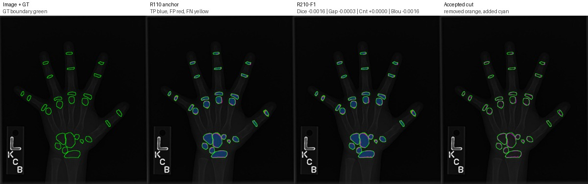
{
"accepted": "1.0",
"accepted_cut_pixels": "72.0",
"anchor_assd_px": "1.458594309165719",
"anchor_boundary_f1": "0.447128598293071",
"anchor_boundary_iou": "0.287936655798789",
"anchor_component_count_mae": "1.0",
"anchor_component_delta_mean": "1.0",
"anchor_component_merge_rate": "0.0",
"anchor_dice": "0.8973955287661374",
"anchor_gap_region_fp_rate": "0.0465778237805667",
"anchor_gap_region_precision": "0.9534221762194333",
"anchor_hd95_px": "4.0",
"anchor_instance_merge_count": "1.0",
"anchor_iou": "0.8138870757180157",
"anchor_precision": "0.9650735294117647",
"anchor_recall": "0.8385876418663304",
"anchor_specificity": "0.9990750313554122",
"anchor_surface_dice_2px": "0.7687593423019432",
"anchor_surface_dice_5px": "0.9811659192825112",
"delta_assd_px": "0.018919932822661467",
"delta_boundary_f1": "-0.0018978957152675502",
"delta_boundary_iou": "-0.001572175025985778",
"delta_component_count_mae": "0.0",
"delta_component_delta_mean": "0.0",
"delta_component_merge_rate": "0.0",
"delta_dice": "-0.001563134082650075",
"delta_gap_region_fp_rate": "-0.00032345710958726903",
"delta_gap_region_precision": "0.0003234571095873662",
"delta_hd95_px": "0.12310562561766059",
"delta_instance_merge_count": "0.0",
"delta_iou": "-0.0025678607998290692",
"delta_precision": "0.00012064534551681216",
"delta_recall": "-0.0028163093736863765",
"delta_specificity": "6.405600031733627e-06",
"delta_surface_dice_2px": "-0.004246583012284977",
"delta_surface_dice_5px": "3.09170105794454e-05",
"image": "3366.png",
"num_candidates": "11.0",
"num_candidates_tried": "5.0",
"r210_f1_assd_px": "1.4775142419883804",
"r210_f1_boundary_f1": "0.44523070257780345",
"r210_f1_boundary_iou": "0.28636448077280324",
"r210_f1_component_count_mae": "1.0",
"r210_f1_component_delta_mean": "1.0",
"r210_f1_component_merge_rate": "0.0",
"r210_f1_dice": "0.8958323946834873",
"r210_f1_gap_region_fp_rate": "0.04625436667097943",
"r210_f1_gap_region_precision": "0.9537456333290206",
"r210_f1_hd95_px": "4.123105625617661",
"r210_f1_instance_merge_count": "1.0",
"r210_f1_iou": "0.8113192149181866",
"r210_f1_precision": "0.9651941747572815",
"r210_f1_recall": "0.835771332492644",
"r210_f1_specificity": "0.9990814369554439",
"r210_f1_surface_dice_2px": "0.7645127592896582",
"r210_f1_surface_dice_5px": "0.9811968362930906",
"reject_reason": "accepted"
}
Recall drop risk with gap gain
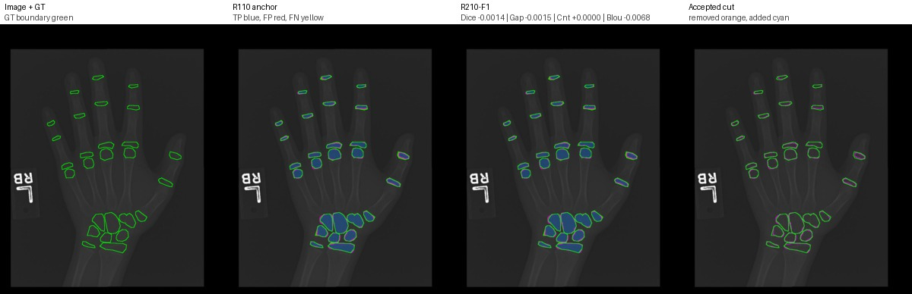
{
"accepted": "1.0",
"accepted_cut_pixels": "136.0",
"anchor_assd_px": "1.270313015045476",
"anchor_boundary_f1": "0.4931293463143255",
"anchor_boundary_iou": "0.32725393192054936",
"anchor_component_count_mae": "1.0",
"anchor_component_delta_mean": "1.0",
"anchor_component_merge_rate": "0.0",
"anchor_dice": "0.9218408477667737",
"anchor_gap_region_fp_rate": "0.06664932362122789",
"anchor_gap_region_precision": "0.9333506763787721",
"anchor_hd95_px": "3.605551275463989",
"anchor_instance_merge_count": "2.0",
"anchor_iou": "0.855013701694536",
"anchor_precision": "0.9597903195429719",
"anchor_recall": "0.8867782256895101",
"anchor_specificity": "0.9987077692223111",
"anchor_surface_dice_2px": "0.82039278374058",
"anchor_surface_dice_5px": "0.9937200274035168",
"delta_assd_px": "0.02076817255383956",
"delta_boundary_f1": "-0.007715110608374487",
"delta_boundary_iou": "-0.006760865664771243",
"delta_component_count_mae": "0.0",
"delta_component_delta_mean": "0.0",
"delta_component_merge_rate": "0.0",
"delta_dice": "-0.0013689658278887018",
"delta_gap_region_fp_rate": "-0.001456815816857443",
"delta_gap_region_precision": "0.0014568158168574152",
"delta_hd95_px": "0.0",
"delta_instance_merge_count": "0.0",
"delta_iou": "-0.0023523707492179025",
"delta_precision": "0.0007102794104358878",
"delta_recall": "-0.0031321597401466894",
"delta_specificity": "2.8245481479616252e-05",
"delta_surface_dice_2px": "-0.0034447910398500703",
"delta_surface_dice_5px": "-0.00033499090716648805",
"image": "3567.png",
"num_candidates": "12.0",
"num_candidates_tried": "5.0",
"r210_f1_assd_px": "1.2910811875993156",
"r210_f1_boundary_f1": "0.485414235705951",
"r210_f1_boundary_iou": "0.3204930662557781",
"r210_f1_component_count_mae": "1.0",
"r210_f1_component_delta_mean": "1.0",
"r210_f1_component_merge_rate": "0.0",
"r210_f1_dice": "0.920471881938885",
"r210_f1_gap_region_fp_rate": "0.06519250780437044",
"r210_f1_gap_region_precision": "0.9348074921956295",
"r210_f1_hd95_px": "3.605551275463989",
"r210_f1_instance_merge_count": "2.0",
"r210_f1_iou": "0.8526613309453182",
"r210_f1_precision": "0.9605005989534078",
"r210_f1_recall": "0.8836460659493635",
"r210_f1_specificity": "0.9987360147037907",
"r210_f1_surface_dice_2px": "0.8169479927007299",
"r210_f1_surface_dice_5px": "0.9933850364963503",
"reject_reason": "accepted"
}
Dice/Recall drop risk with small gap gain
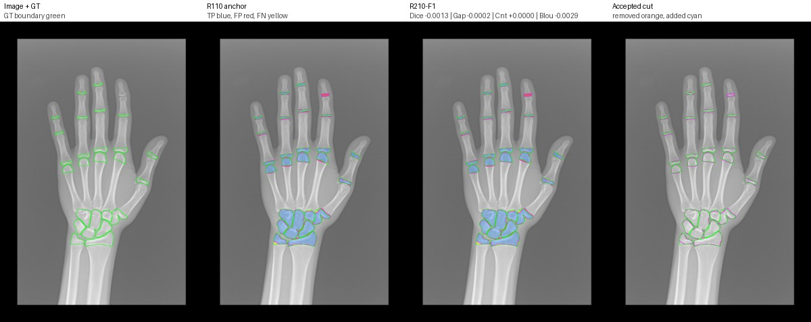
{
"accepted": "1.0",
"accepted_cut_pixels": "175.0",
"anchor_assd_px": "3.8001580838468523",
"anchor_boundary_f1": "0.3363746467501009",
"anchor_boundary_iou": "0.20219374878664337",
"anchor_component_count_mae": "2.0",
"anchor_component_delta_mean": "-2.0",
"anchor_component_merge_rate": "1.0",
"anchor_dice": "0.9110243378988628",
"anchor_gap_region_fp_rate": "0.2343593174974908",
"anchor_gap_region_precision": "0.7656406825025092",
"anchor_hd95_px": "10.367968324948777",
"anchor_instance_merge_count": "2.0",
"anchor_iou": "0.8365883367320405",
"anchor_precision": "0.9061087146647693",
"anchor_recall": "0.9159935863815504",
"anchor_specificity": "0.9968543198472354",
"anchor_surface_dice_2px": "0.6224347968277328",
"anchor_surface_dice_5px": "0.8983729866732074",
"delta_assd_px": "0.026602381567010447",
"delta_boundary_f1": "-0.003982325407948961",
"delta_boundary_iou": "-0.002870895098614351",
"delta_component_count_mae": "0.0",
"delta_component_delta_mean": "0.0",
"delta_component_merge_rate": "0.0",
"delta_dice": "-0.0013473517998768836",
"delta_gap_region_fp_rate": "-0.00020910003345600559",
"delta_gap_region_precision": "0.00020910003345597783",
"delta_hd95_px": "-0.07233818396177583",
"delta_instance_merge_count": "0.0",
"delta_iou": "-0.0022695389986086",
"delta_precision": "-0.00016988637953907482",
"delta_recall": "-0.0025474652720542945",
"delta_specificity": "2.4831703131500404e-06",
"delta_surface_dice_2px": "-0.00755282345519348",
"delta_surface_dice_5px": "-0.0029225251850101275",
"image": "3777.png",
"num_candidates": "16.0",
"num_candidates_tried": "5.0",
"r210_f1_assd_px": "3.8267604654138627",
"r210_f1_boundary_f1": "0.33239232134215196",
"r210_f1_boundary_iou": "0.19932285368802902",
"r210_f1_component_count_mae": "2.0",
"r210_f1_component_delta_mean": "-2.0",
"r210_f1_component_merge_rate": "1.0",
"r210_f1_dice": "0.909676986098986",
"r210_f1_gap_region_fp_rate": "0.2341502174640348",
"r210_f1_gap_region_precision": "0.7658497825359651",
"r210_f1_hd95_px": "10.295630140987",
"r210_f1_instance_merge_count": "2.0",
"r210_f1_iou": "0.8343187977334319",
"r210_f1_precision": "0.9059388282852302",
"r210_f1_recall": "0.9134461211094961",
"r210_f1_specificity": "0.9968568030175485",
"r210_f1_surface_dice_2px": "0.6148819733725394",
"r210_f1_surface_dice_5px": "0.8954504614881973",
"reject_reason": "accepted"
}
Dice/Recall drop risk with gap gain
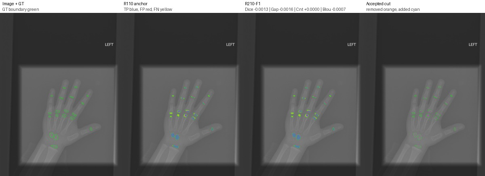
{
"accepted": "1.0",
"accepted_cut_pixels": "62.0",
"anchor_assd_px": "10.92324437931693",
"anchor_boundary_f1": "0.2568159948679568",
"anchor_boundary_iou": "0.14732580961727185",
"anchor_component_count_mae": "5.0",
"anchor_component_delta_mean": "-5.0",
"anchor_component_merge_rate": "1.0",
"anchor_dice": "0.7649913344887348",
"anchor_gap_region_fp_rate": "0.11858308012154166",
"anchor_gap_region_precision": "0.8814169198784584",
"anchor_hd95_px": "97.31032712286338",
"anchor_instance_merge_count": "0.0",
"anchor_iou": "0.6194218355318551",
"anchor_precision": "0.8792128117281491",
"anchor_recall": "0.6770354009448433",
"anchor_specificity": "0.9995075231043457",
"anchor_surface_dice_2px": "0.4866962305986696",
"anchor_surface_dice_5px": "0.7476718403547672",
"delta_assd_px": "-0.016747548167549198",
"delta_boundary_f1": "-0.0010566092024277829",
"delta_boundary_iou": "-0.0006950159276546408",
"delta_component_count_mae": "0.0",
"delta_component_delta_mean": "0.0",
"delta_component_merge_rate": "0.0",
"delta_dice": "-0.0012703396297657488",
"delta_gap_region_fp_rate": "-0.001599232368463141",
"delta_gap_region_precision": "0.0015992323684631549",
"delta_hd95_px": "-0.01695633122105278",
"delta_instance_merge_count": "0.0",
"delta_iou": "-0.0016640383978286932",
"delta_precision": "0.0010017771100284678",
"delta_recall": "-0.002576845205227385",
"delta_specificity": "6.497056670884405e-06",
"delta_surface_dice_2px": "-0.0011841757435490652",
"delta_surface_dice_5px": "0.000613937128090547",
"image": "1884.png",
"num_candidates": "5.0",
"num_candidates_tried": "5.0",
"r210_f1_assd_px": "10.906496831149381",
"r210_f1_boundary_f1": "0.255759385665529",
"r210_f1_boundary_iou": "0.1466307936896172",
"r210_f1_component_count_mae": "5.0",
"r210_f1_component_delta_mean": "-5.0",
"r210_f1_component_merge_rate": "1.0",
"r210_f1_dice": "0.763720994858969",
"r210_f1_gap_region_fp_rate": "0.11698384775307852",
"r210_f1_gap_region_precision": "0.8830161522469215",
"r210_f1_hd95_px": "97.29337079164233",
"r210_f1_instance_merge_count": "0.0",
"r210_f1_iou": "0.6177577971340265",
"r210_f1_precision": "0.8802145888381776",
"r210_f1_recall": "0.6744585557396159",
"r210_f1_specificity": "0.9995140201610165",
"r210_f1_surface_dice_2px": "0.48551205485512056",
"r210_f1_surface_dice_5px": "0.7482857774828577",
"reject_reason": "accepted"
}